Module 2: Anypoint Exchange
API’s are the reusable assets that simplify and accelerate the creation of modern software applications. As a developer you will consume API created by other members of the organization. This is the foundation of a new approach for delivering software solutions where API’s form the building blocks of the modern enterprise.
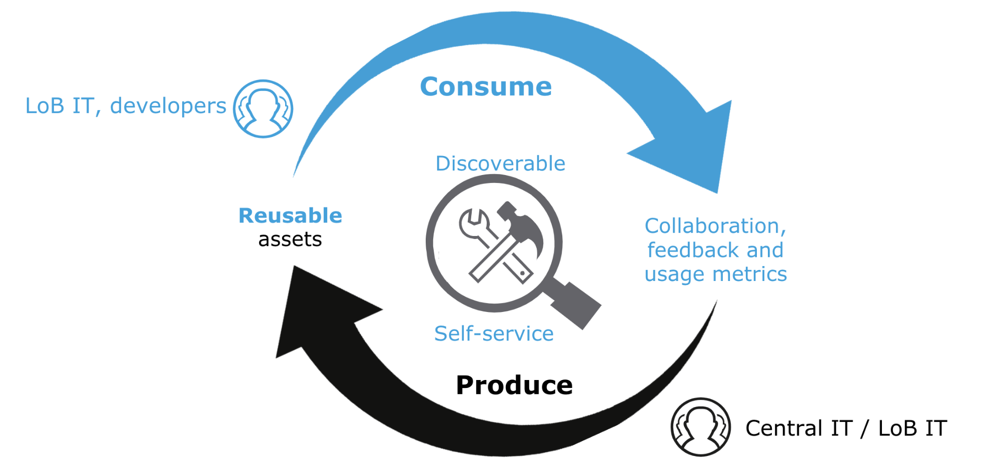
One of the biggest challenges encountered by early adopters of SOA was how to scale their development activities. SOA maintains many of the reuse principles that we have discussed in our "API-led" approach to software development. Unfortunately, most SOA efforts could not achieve their reusability objectives because of a few limiting factors including:
- Poorly documented services
- Lack of mature tools to facilitate service discovery
- Burdensome processes for gaining access to services
As a result, many SOA-based initiatives were only able to partially achieve their reusability objectives because developers would adopt the path of least resistance and simply recreate services rather than reuse them. The Anypoint Platform addresses all of these issues by providing innovative tools like Anypoint Exchange that alleviate these challenges.
Lab Steps
Step 1: Publish your API to Anypoint Exchange
Step 2: Create the documentation for your API
Step 3: Share your API in the Public Portal
Step 4 (Optional): Find any API in the organization
Step 5 (Optional): Explore the API documentation
Step 1: Publish your API to Anypoint Exchange
Let’s take a look at the process for publishing and documenting our Mobile API.
- Go to Design Center and open the API you just created
| 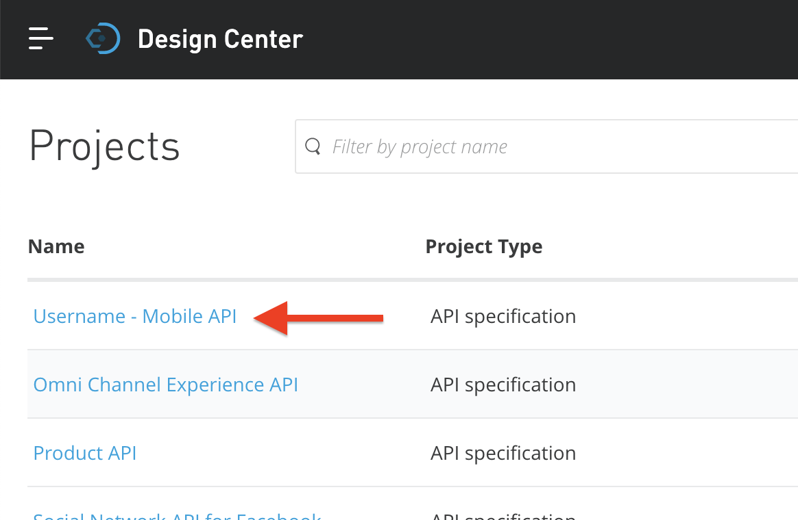 |
- Click on the "Publish to Exchange" button
| 
|
You will be presented with a popup window to capture the attributes that you want to publish to Exchange.
- Enter the asset version as 1.0.0
- Click the "Publish" button when you have finished reviewing the API name and version information.
| 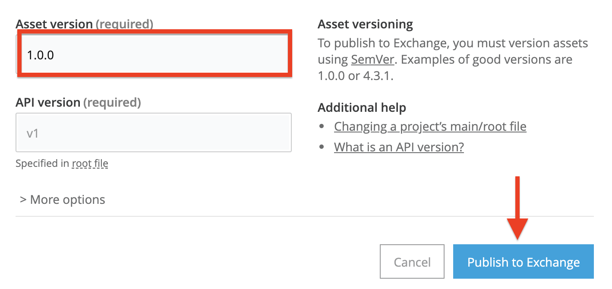 |
Step 2: Create the documentation for your API
Let’s find our API in Exchange and add more to our API documentation.
- Use the search bar to find your API if it is not readily visible in the list of Exchange assets. Click on your API once you find it:
| 
|
- Click on the "Edit" button to launch into edit mode.
| 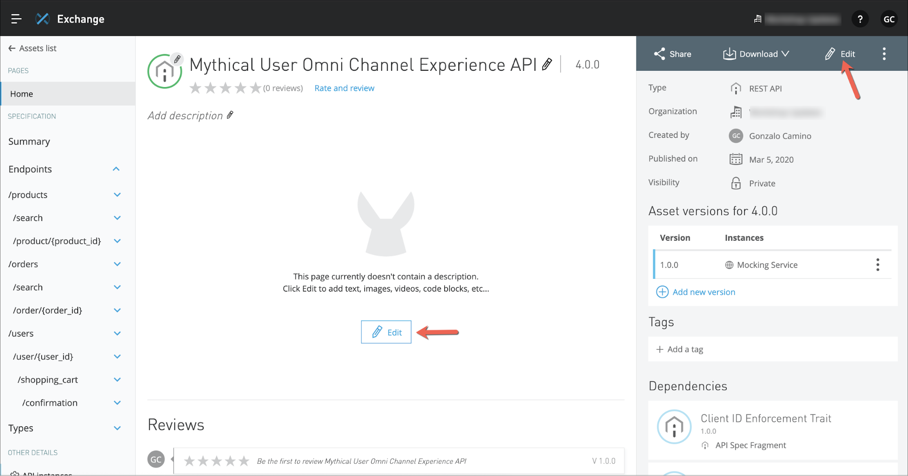 |
- Create your own documentation for your API.
- Choose between Markdown or Visual
Example for Markdown:
The **Mobile API** is used to simplify access to Orders, Products, and the Shopping Cart features required for the new mobile experience.
Developers requiring can easily compose innovative applications by leveraging this API to do the following:
- Retrieve the product Catalog and details - Add products to a stateful shopping cart - Search for orders and retrieve their status - Create a new order
- Click on the "Save as Draft" button
| 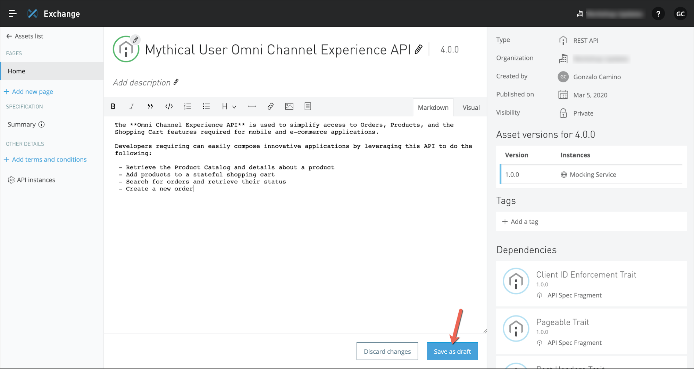 |
Your draft of the API documentation is saved but not publicly available in Exchange.
- Press the Publish button. Your documentation changes are now visible on Exchange!
| 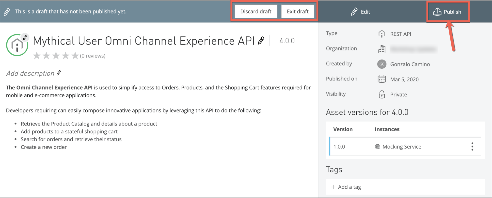 |
Step 3: Share your API in the Public Portal
Anypoint Platform provides a Public Portal. This portal can be accessed by everybody and there you will publish all the public apis.
- Click on the "Share" button
| 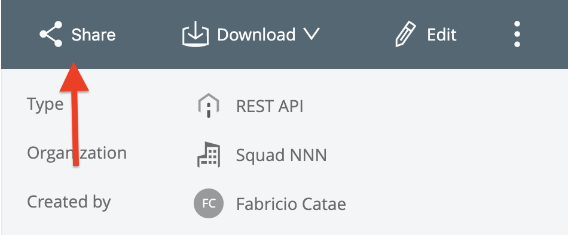 |
- Choose to publish to the Public portal
- Select the version to publish
| 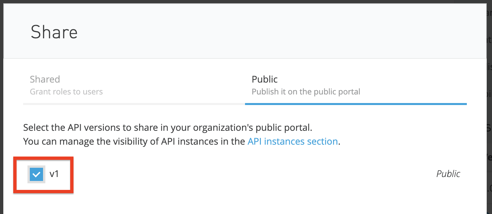 |
- Go back to Anypoint Exchange portal and click on the "Public Portal" link
| 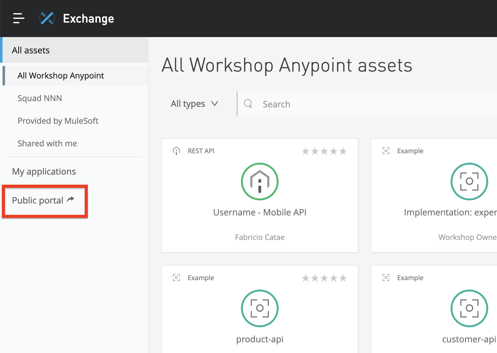 |
Congratulations! You have just published your API to your public portal.
Users with "Exchange Administrator" role on the main business group can customize the portal. | 
|
Module 2-B: Clients of Exchange
Anypoint Exchange should be your initial starting point for just about any project. If you are looking to reuse an API then Anypoint Exchange is obviously where you should start. But even if you are creating a new API to be reused by others, it makes sense to first look in Exchange to see if the API already exists. Sometimes you will find that someone else has already undertaken the task of creating the API, or has created a subset of what you need.
Step 4 (Optional): Find any API in the organization
Anypoint Exchange provides several new features to support and encourage discovery and collaboration.
- Click on the icon labeled "Discover & share"
| 
|
- By default searches will search the private exchange only, but you can restrict or expand your searches by selecting a different organizational level. Select All assets to select both MuleSoft public and your private repositories.
| 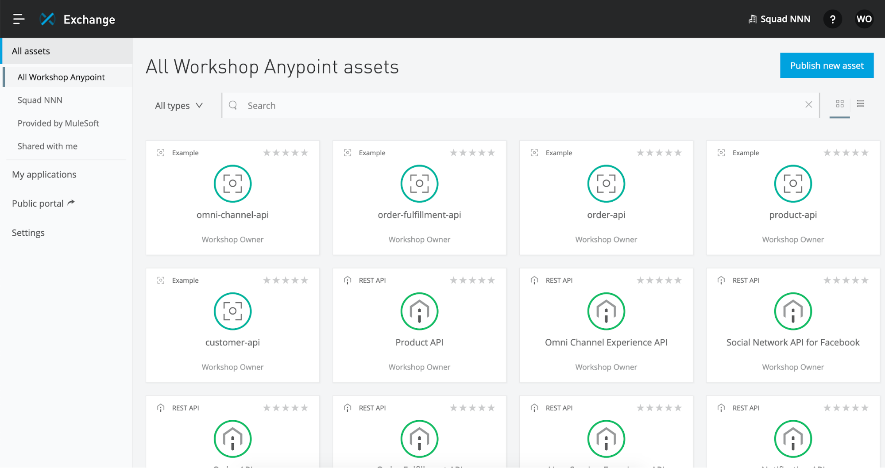 |
- Click on the search field and type "omni", then hit the Enter Key.
- The list of Exchange assets should now be filtered. Click on the tile named Omni Channel Experience API.
| 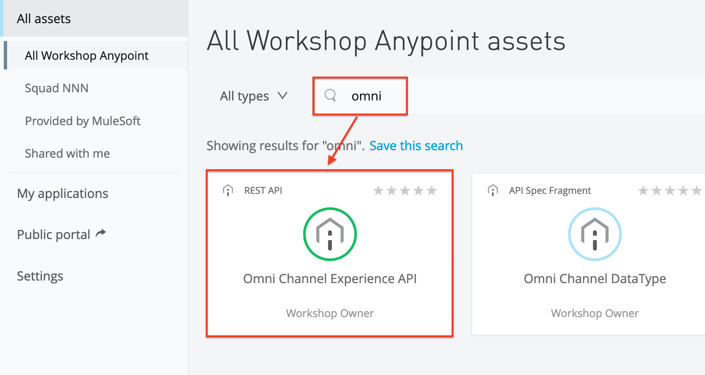 |
- You should now see the page dedicated to the API definition.
| 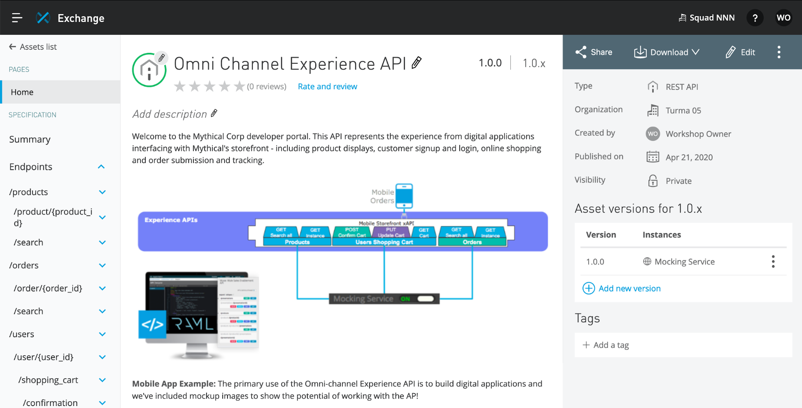 |
Step 5 (Optional): Explore the API documentation
Anypoint Exchange provides a documentation portal for the API.
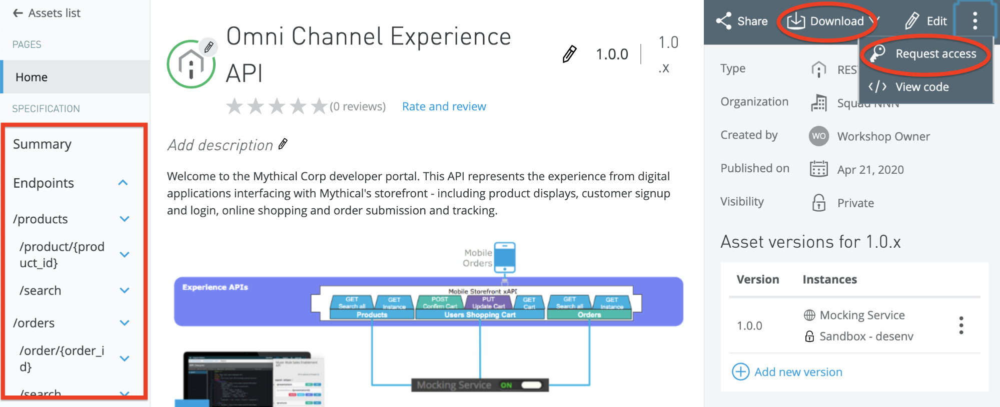
API Summary: This is the API specification. You can view the documentation for each resource. - Expand /product/{product_id} resource
- Click on the [GET] resource method
The documentation for /product/{product_id} will open in the central panel. - Click on Code examples to understand how to connect to this API
| 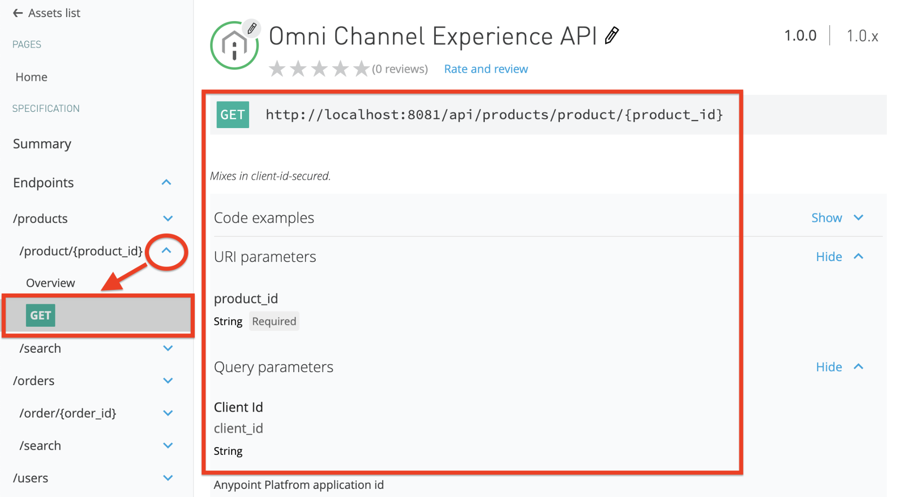 |
Download: This option is to download the RAML Spec or Mule Plugin to use it as a Connector.
- Click on "As OAS" to download Swagger definition
- Click on "As Mule 4" connector" to get a .jar file to use in your Mule App
| 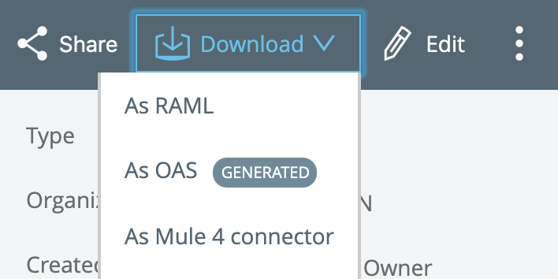 |
Request access: When the API is protected, it is required to request access.
- Click on Request access option
- A window will open and show the options for which API instance and Application
- Create a New Application for your own use
- Submit your request for API access
| 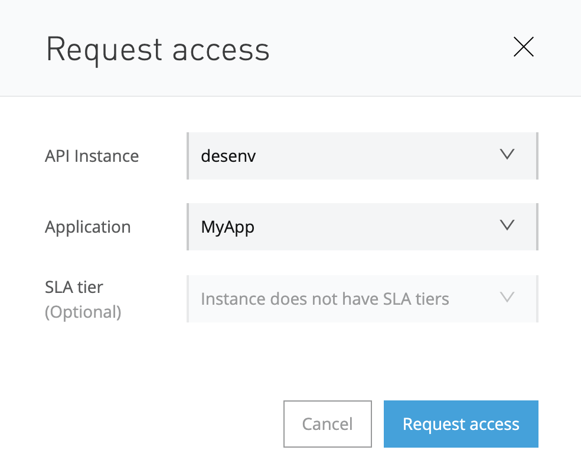 |